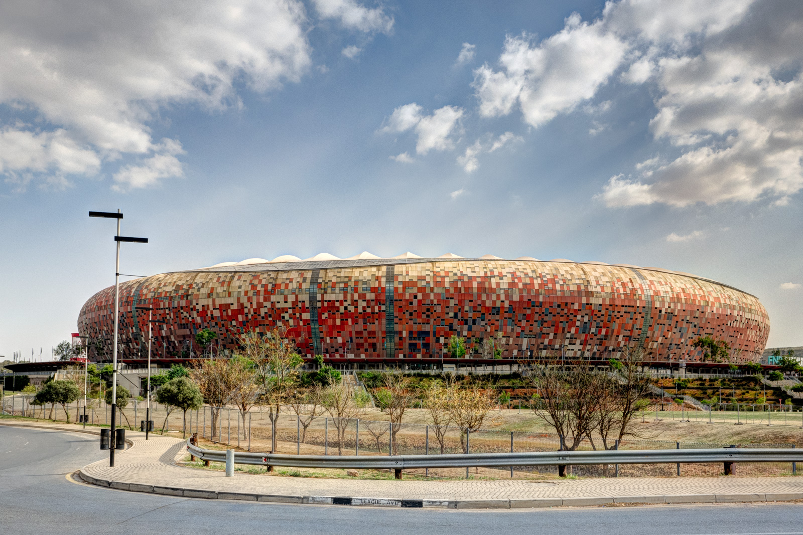

Johannesburg
Johannesburg colloquially known as Jozi, Joburg, or "The City of Gold", is the most populous city in South Africa, classified as a megacity, and is one of the 100 largest urban areas in the world.
Johannesburg colloquially known as Jozi, Joburg, or "The City of Gold", is the most populous city in South Africa, classified as a megacity, and is one of the 100 largest urban areas in the world.
The city was established in 1886 following the discovery of gold on what had been a farm. Due to the extremely large gold deposit found along the Witwatersrand, within ten years, the population had grown to 100,000 inhabitants. A separate city from the late 1970s until 1994, Soweto is now part of Johannesburg. Originally an acronym for "South-Western Townships", Soweto originated as a collection of settlements on the outskirts of Johannesburg, populated mostly by native African workers from the gold mining industry. Soweto, although eventually incorporated into Johannesburg, had been separated as a residential area for blacks only (no whites allowed), who were not permitted to live in other White designated suburbs of Johannesburg. Lenasia is predominantly populated by English-speaking South Africans of Indian descent. These areas were designated as non-white areas in accordance with the segregationist policies of the South African government known as apartheid. It was one of the host cities of the official tournament of the 2010 FIFA World Cup—and it hosted the final.
The University of the Witwatersrand, Johannesburg, is a multi-campus South African public research university situated in the northern areas of central Johannesburg. It is more commonly known as Wits University or Wits. The university has its roots in the mining industry, as do Johannesburg and the Witwatersrand in general. Founded in 1896 as the South African School of Mines in Kimberley, it is the third oldest South African university in continuous operation.